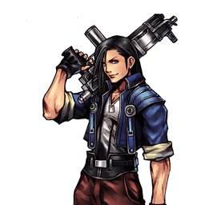

Final Fantasy VIII
Laguna Loire
Zoneur de mi-distance : une menace à toutes les portées, mais des recoveries punissables
Vue d'ensemble
Laguna est un zoneur de mi-distance qui équilibre outils de keepaway et de rushdown. Ses forces : un large éventail de pokes pour grignoter la bravery adverse, et des propriétés de coups uniques qui autorisent des stratégies peu conventionnelles pour contourner l'adversaire.
Sa variété de portées lui permet de toujours menacer avec quelque chose : Homing Bazooka à longue distance, Ricochet Shot à mi-distance, Pummel et Electroshield au corps à corps.
Sa plus grande faiblesse est la longue recovery de beaucoup de ses coups clés, qui le rend facile à whiff punir à la moindre erreur. Pour tenir en défense, il faut varier constamment ses options afin de désorienter l'adversaire, et surveiller ses ressources pour calibrer le rapport risque/récompense.
Si vous aimez le jeu de mi-distance, poker à l'usure et encaisser gros sur la bonne touche, et jouer un neutral de keepaway, Laguna est votre « Man with the Machine Gun ».
Tier list 2017 (tournoi, dissidia.wiki) : C — 29ᵉ sur 30. Laguna est 29e sur 30 du classement 2017, en tier C (avant-dernier). L'overview ne commente pas ce classement, mais souligne sa principale limite compétitive : des recoveries longues sur les coups clés, faciles à whiff punir.
Forces
- Large éventail de pokes pour grignoter la bravery adverse à l'usure.
- Menace à toutes les portées : Homing Bazooka de loin, Ricochet Shot à mi-distance, Pummel et Electroshield de près.
- Propriétés de coups uniques ouvrant des stratégies peu conventionnelles (explosion imblocable de Sticky Bomb, bouclier persistant d'Electro Shield, laser à ricochets).
- Electro Shield et Ricochet Shot combinés sont difficiles à contester et à punir, et remplissent bien la jauge assist.
- EX Burst au démarrage dévastateur : 32 de dégâts de base initiaux, deuxième valeur du jeu à égalité avec Lightning — précieux pour les bravery breaks.
Faiblesses
- Longue recovery sur beaucoup de coups clés : chaque erreur expose à un whiff punish.
- Plusieurs de ses HP (Ragnarok Blade, Split Laser, Satellite Laser) comptent parmi les assist punishes les plus faciles à réaliser — un assist appelé juste avant l'impact garantit un bravery break adverse.
- Défense qui repose sur le mixup permanent : sans variation constante des options, Laguna se fait déborder.
- Missile Barrage, probablement son pire coup, est trop niche face à la qualité du reste de son arsenal.
Stats & vitesses
| Nom | Laguna Loire (ラグナ・レウァール) |
|---|---|
| Jeu d'origine | Final Fantasy VIII |
| ATK de base (LV100) | 111 (High) |
| DEF de base (LV100) | 110 (Low) |
| Vitesse de course | 9 (Slow) |
| Vitesse de dash | 81 (Below Average) |
| Vitesse de chute | 75 (Above Average) |
| Chute après esquive | 35 (Above Average) |
| BRV la plus rapide | 13F (Pummel) |
| HP la plus rapide | ~38F (Split Laser) |
| HP en 1 coup | Yes (Ragnarok Blade, Split Laser) |
| HP links | Yes (Combos only) |
| Command block | No |
| Armes | Daggers Greatswords Guns Swords |
| Armures | Bangles Chestplates Clothing Hats Helms Light Armor Shields |
| Armes exclusives | Machine Gun, High-Power Machine Gun,Ragnarok Pistol |
| Unlock | Default |
| Camp | Cosmos |
| Doubleur (JP) | Hiroaki Hirata |
| Doubleur (ENG) | Armando Valdes-Kennedy |
Valeurs brutes du wiki (page personnage) — plus la valeur est basse, plus le personnage est rapide. Trait pointillé or : moyenne des 31 personnages.
Coups
Startup en frames (60 i/s, données dissidia.wiki). Couleur : Melee Low · Melee Mid · Melee High · Ranged.
Braveries
Au sol
Machine Gun
Du run'n'gun littéral : après la startup, Laguna peut se déplacer en tirant, avec un léger tracking. Portée assez courte mais bon gain d'EX Force, et beaucoup de personnages ne peuvent pas frapper au travers en fonçant de face ; combiné à Electroshield, il punit les tentatives de ground dash ou repousse l'adversaire vers une position propice au Ricochet Shot. La conversion en assist est possible mais délicate, avec très peu de hit stun.
| Damage multiplier | Startup frame | Type | Priority | EX Force | Effects | CP (Mastered) |
|---|---|---|---|---|---|---|
| 1 x 32 (32) | 31 | Physical | Ranged Low | 3x32 (96) | None | 30 (15) |
Ricochet Shot Ranged Mid
L'outil principal au sol, un couteau suisse de la pression mi/longue distance : le tir principal (Ranged Mid) ricoche sur le sol et les murs, la balle de ricochet est Low. Chargeable pour plus de balles fractionnées (3 à demi-charge, 5 à pleine charge, chacune touche séparément) ; seul le tir principal traque l'adversaire après ricochet — excellent pour le dodge punish, tirer derrière les projectiles adverses ou juste au-dessus de Laguna. Attention : un block reflète tout de même le ricochet, et l'effet Chase saute si une pleine charge ne touche qu'avec une seule balle fractionnée. À utiliser autant que possible, sans en abuser.
| Main Bullet | Split Bullet | |
|---|---|---|
| Dégâts de base | 35 | 5 each |
| Startup | 37F, 1F after release54F Half / 70F (Full Charge) | ?? |
| Type | Physical | Physical |
| Priorité | Ranged Mid | Ranged Low |
| EX Force | 60 | 3? |
| Effets | - | Chase |
| Cancels | Dodge | Dodge |
| CP (maîtrisé) | 30 (15) |
Grenade Bomb
Probablement le coup à la recovery la plus courte de Laguna : lent à sortir, mais annulable en block ou esquive très vite après le lancer — bon pour les mixups et peu engageant pour construire la jauge assist. Il intercepte les coups à longue startup pour forcer l'engagement, se convertit en combo sur anticipation ou en hit-confirm avec assist, et ajoute un supplément de dégâts en fin de combo d'assist.
| Damage multiplier | Startup frame | Type | Priority | EX Force | Effects | CP (Mastered) |
|---|---|---|---|---|---|---|
| 15 (15) | 81F / 91F / 99F | Physical | Ranged Low | 0 | None | 30 (15) |
Pummel (ground)
Melee Low rapproché qui complète son jeu toutes distances : poke rapide, défense après esquive, excellent gain d'EX Force et recovery raisonnable — il s'annule en lui-même plus vite qu'en block ou esquive. Tracking surtout horizontal, un peu de vertical ; la version au sol laisse Laguna en l'air ensuite. Peu d'assists combottent dessus, mais c'est un pilier du moveset dans de nombreux matchups : apprenez à aimer ce coup.
| Damage multiplier | Startup frame | Type | Priority | EX Force | Effects | CP (Mastered) |
|---|---|---|---|---|---|---|
| 6, 14 (20) | 13F | Physical | Melee Low | 90 | Chase | 30 (15) |
Missile Barrage (ground)
Jusqu'à 6 petits missiles (maintenir pour tous les tirer) au tracking exécrable : ils partent dans tous les sens avec un rayon de virage ingrat, se traversent au dash et se bloquent. Ils freinent et limitent les déplacements adverses, mais le faible hit stun et les petits dégâts rendent la conversion difficile. Probablement son pire coup, bien trop niche face à la qualité du reste de l'arsenal.
| Damage multiplier | Startup frame | Type | Priority | EX Force | Effects | CP (Mastered) |
|---|---|---|---|---|---|---|
| 4 each, max 6 | 23F | Physical | Ranged Low | 2 (36) | None | 30 (15) |
Electro Shield (ground)
Pose un bouclier persistant devant Laguna, projectile Mid qui éjecte et Wall Rush au contact. Laguna est presque entièrement couvert en restant juste dedans (très fiable au sol), même si certaines hitboxes le touchent encore — espacez selon le matchup. Bloqué, il agit comme reflété (l'adversaire peut ensuite passer au travers) ; un coup de mêlée haute priorité le détruit ; la version au sol met Laguna en l'air, pratique pour se replacer d'un backdodge. Le pain quotidien du keepaway : il ralentit les approches, sert de mixup, résiste bien aux assist punishes et remplit la jauge assist.
| Damage multiplier | Startup frame | Type | Priority | EX Force | Effects | CP (Mastered) |
|---|---|---|---|---|---|---|
| 10 (10) | 37F | Physical | Ranged Mid | 0 | Wall rush | 30 (15) |
En l’air
Shotgun Ranged Low
Un fusil à pompe qui tire comme tel — sauf chargé (55F), où il passe en Ranged Mid. Lent et Ranged Low sinon, mais bonne portée et dodge cancel assez précoce (impossible pendant la charge). Jusqu'à trois tirs, ce qui aide les conversions en assist, le dernier Wall Rush ; le tracking, limité, ne suit plus vraiment après le premier tir. Un outil peu polyvalent mais utile dans certains matchups, à manier avec précaution sans Electro Shield posé.
| Normal | Charged | |
|---|---|---|
| Dégâts de base | 30 (1 x 6, 1 x 6, 3 x 6) | 30 (1 x 6, 1 x 6, 3 x 6) |
| Startup | 21F | 55F |
| Type | Physical | Physical |
| Priorité | Ranged Low | Ranged Mid |
| EX Force | Max 36 | Max 36 |
| Effets | Wall Rush | Wall Rush |
| Cancels | Dodge | Dodge |
| CP (maîtrisé) | 30 (15) |
Homing Bazooka Ranged Mid
Gros missile : jusqu'à deux pressions retardent l'accélération et augmentent la portée. Tracking horizontal remarquable jusqu'au tir initial, puis homing à très large rayon de virage une fois lancé. Particularité unique : c'est l'explosion au contact qui porte la priorité Mid — le missile traverse les autres projectiles jusqu'à toucher ou être bloqué, et la hitbox d'explosion apparaît même contre un mur. Le knockback dépend directement de l'angle d'impact (touché de dos, l'adversaire revient droit vers Laguna — crucial pour confirmer les Wall Rush). Excellent anti-zoning, mais assez facile à assist punir : à utiliser réfléchi et avec de la jauge derrière.
| Dégâts de base | 36 |
|---|---|
| Startup | 41F |
| Type | Physical |
| Priorité | Ranged Mid |
| EX Force | 0 |
| Effets | Wall Rush |
| CP (maîtrisé) | 30 (15) |
Sticky Bomb Ranged Low (bomb), Unblockable (explosion)
Bombe qui colle à l'adversaire et explose après 186F (environ 3 secondes) ; la charge augmente vitesse et portée de lancer, et une pleine charge peut être retenue un instant. La bombe lancée est Ranged Low, mais l'explosion — à distance max ou après le délai de collage — est imblocable et se convertit avec de nombreux assists ; à distance max sans collage, elle touche même deux fois pour des dégâts doublés. Le délai de collage nourrit les mindgames et en fait un check horizontal assez rapide et sûr contre les setups adverses : un outil fantastique pour la présence aérienne à mi-distance.
| Dégâts de base | 20 (hits twice if explodes at max range without latching) |
|---|---|
| Startup | 29F / 42F / 62F (charge), 9F (release) |
| Type | Physical |
| Priorité | Ranged Low (bomb), Unblockable (explosion) |
| EX Force | 0 |
| CP (maîtrisé) | 30 (15) |
Pummel (midair)
Identique à la version au sol : poke rapproché rapide, défense post-esquive, excellent gain d'EX Force, annulable en lui-même plus vite qu'en block ou esquive. Un pilier du jeu rapproché de Laguna dans de nombreux matchups, même si peu d'assists combottent dessus.
| Damage multiplier | Startup frame | Type | Priority | EX Force | Effects | CP (Mastered) |
|---|---|---|---|---|---|---|
| 6, 14 (20) | 13 | Physical | Melee Low | 90 | Chase | 30 (15) |
Missile Barrage (midair)
Identique à la version au sol : jusqu'à 6 missiles au homing exécrable, traversables au dash et blocables. Ils gênent les déplacements mais convertissent très mal — probablement le pire coup de Laguna.
| Damage multiplier | Startup frame | Type | Priority | EX Force | Effects | CP (Mastered) |
|---|---|---|---|---|---|---|
| 4 each, max 6 | 23 | Physical | Ranged Low | 2 (36) | None | 30 (15) |
Electro Shield (midair)
Identique à la version au sol : bouclier persistant Mid qui éjecte et Wall Rush au contact, cœur du keepaway et du mixup de Laguna, difficile à assist punir et bon générateur de jauge assist. Détruit par un coup de mêlée haute priorité, et un block adverse le fait agir comme reflété.
| Damage multiplier | Startup frame | Type | Priority | EX Force | Effects | CP (Mastered) |
|---|---|---|---|---|---|---|
| 10 (10) | 37 | Physical | Ranged Mid | 0 | Wall rush | 30 (15) |
Attaques HP
Au sol
Ragnarok Buster Melee High
Énorme canon laser à grande portée (Melee High), excellent HP pour intercepter les coups engageants à mi-distance. La charge (53F~172F) permet de retarder le tir pour déjouer les tentatives de punish et piéger les personnages à chute rapide ; retarder pour provoquer volontairement un clash avec un HP et faire stagger l'assist punisher est aussi une option vicieuse. C'est notamment l'un des moyens les plus simples de clash avec Maelstrom ou Holy pour s'en protéger, et un très bon finisher de combo d'assist qui garde la distance avec Wall Rush.
| Dégâts de base | 1 x 7 (7) |
|---|---|
| Startup | 53F~172F (charge), 3F (release) |
| Type | Physical |
| Priorité | Melee High |
| EX Force | 21 |
| Effets | Wall Rush |
| CP (maîtrisé) | 40 (20) |
Satellite Laser Ranged High
Startup énorme (83F) mais portée verticale infinie et tracking horizontal immense : lancé sur un read, il punit directement les coups à longue startup depuis n'importe quelle hauteur. Beaucoup de personnages peuvent le traverser d'un dash horizontal, et un assist adverse appelé juste avant l'impact garantit un bravery break — prudence. En finisher de combo, c'est le plus gros en dégâts et il ground rush toujours : le choix idéal quand c'est possible. Un HP niche mais aux propriétés remarquables pour la pression longue distance.
| Dégâts de base | 2 x 6 (12) |
|---|---|
| Startup | 83F |
| Type | Physical |
| Priorité | Ranged High |
| EX Force | 36 |
| Effets | Wall Rush |
| CP (maîtrisé) | 30 (15) |
En l’air
Ragnarok Blade Melee High
Pilier absolu de la présence à mi-distance de Laguna : HP plutôt rapide (43F) malgré son risque, avec une portée énorme vers le haut et à l'horizontale, un tracking fantastique et une grande portée de Wall Rush. Il brille dans le jeu de punish et d'Assist Change, permettant de punir beaucoup de coups lents à la réaction. L'angle de knockback dépend directement de la position d'impact, idéal pour contrôler l'angle du Wall Rush et hit-confirmer avec assist. Revers : c'est l'un des assist punishes les plus faciles à timer pour un break garanti — vérifiez les ressources adverses avant de l'utiliser.
| Startup | 43F |
|---|---|
| Priorité | Melee High |
| EX Force | 0 |
| Effets | Wall Rush |
| CP (maîtrisé) | 30 (15) |
Split Laser Ranged High
Son HP le plus rapide (35F au minimum de charge, release en 3F) : une boule d'énergie qui se scinde en projectiles après détonation. Facile à assist punir à la réaction, mais à ne pas négliger en neutral : il couvre l'angle juste sous Laguna, punit les coups de setup lents et se confirme avec assist — un excellent poke HP à doser. Très fort aussi en punish d'Assist Change contre les longs HP comme Quick Hit. Génération d'EX Force de premier ordre (60 par touche) : avec le bon espacement, 2-3 touches infligent une depletion ou un gain d'EX massifs.
| Startup | 35F~117F (charge), 3F (release) |
|---|---|
| Priorité | Ranged High |
| EX Force | 60 per hit |
| CP (maîtrisé) | 40 (20) |
EX Mode: Look, the faeries are here! & EX Burst
L'EX Mode « Look, the faeries are here! » confère Regen, Critical Boost et A Faerie's Miracle : tant que l'EX Mode est actif, la recovery des bravery attacks peut être annulée en exécutant n'importe quelle attaque.
EX Burst : L'EX Burst Desperado est un mini-jeu de tir : maintenir R pour arroser (le viseur dérive à chaque touche, restez sur les bords), 40 touches remplissent la jauge. Burst notable : si les 100 de dégâts totaux sont dans la moyenne, les 32 de dégâts de base initiaux avant multiplicateur de défense sont la deuxième valeur du jeu, à égalité avec Lightning — très utile pour breaker puis rajouter des dégâts.
Mécanique unique
Plan de jeu & techniques avancées
Le plan de jeu de Laguna consiste à toujours menacer quelque chose, quelle que soit la distance : Homing Bazooka pour perturber le zoning et les setups adverses de loin, Ricochet Shot comme couteau suisse de la pression mi/longue distance au sol, Sticky Bomb comme check horizontal aérien, et Pummel plus Electro Shield pour tenir le corps à corps. L'objectif : grignoter la bravery adverse au poke et encaisser gros sur la bonne touche.
Electro Shield est la clé de voûte du keepaway : posé devant lui, il ralentit les approches, couvre presque entièrement Laguna, sert de mixup et se fait difficilement assist punir. Combiné à Machine Gun, il punit les ground dashes ou repousse l'adversaire vers une position de tir favorable au Ricochet Shot ; combiné à Ricochet Shot, l'ensemble devient dur à contester et à punir.
Les HP structurent le jeu de punish : Ragnarok Blade punit les coups lents à la réaction et contrôle l'angle de Wall Rush, Split Laser couvre l'angle sous Laguna et excelle dans les punishes d'Assist Change (y compris contre les longs HP comme Quick Hit), Ragnarok Buster intercepte à mi-distance avec son tir retardable, Satellite Laser punit sur read depuis n'importe quelle hauteur et sert de finisher maximal. Grenade Bomb, peu engageante, construit la jauge assist et rallonge les combos d'assist.
La discipline défensive est vitale : les recoveries longues des coups clés font de chaque erreur un whiff punish potentiel, et plusieurs HP sont faciles à assist punir pour un break garanti. Variez constamment vos options pour désorienter l'adversaire, et surveillez ses ressources (jauge assist en particulier) avant d'engager un HP risqué. En EX Mode, A Faerie's Miracle supprime ce talon d'Achille sur les braveries en rendant leur recovery annulable par n'importe quelle attaque.
Techniques spécifiques
Ragnarok Buster delayed clash
Retarder la charge de Ragnarok Buster pour déjouer les tentatives de punish, piéger les personnages à chute rapide, ou provoquer volontairement un clash avec un HP adverse et faire stagger l'assist punisher. C'est aussi l'un des moyens les plus simples de clash avec Maelstrom ou Holy pour s'en protéger.
Homing Bazooka angle control
Le knockback de l'explosion dépend directement de l'angle d'impact : touché de dos, l'adversaire est toujours renvoyé droit vers Laguna — une propriété cruciale pour confirmer les Wall Rush. Le missile peut aussi être visé légèrement à côté de l'adversaire, et son explosion (le vrai projectile Mid) traverse les autres projectiles.
Split Laser spacing
Avec le bon espacement, Split Laser touche 2 à 3 fois : à 60 EX Force par touche, cela produit une depletion ou un gain d'EX massifs. C'est aussi un outil de choix pour punir les Assist Changes adverses sur les longs HP.
Sticky Bomb mindgames
Le délai de collage (environ 3 secondes avant explosion imblocable) sert aux mindgames : l'adversaire porteur de la bombe doit gérer l'échéance, et l'explosion se convertit avec de nombreux assists. À distance max sans collage, l'explosion touche deux fois pour des dégâts doublés.
Electro Shield repositioning
La version au sol d'Electro Shield met Laguna en état aérien pendant l'animation, ce qui permet de se replacer immédiatement d'un backdodge après la pose du bouclier.
Techniques universelles (blodge, dash feint, lock off, dodge punishment) : voir la page Techniques & glitches.
Matchups
Vidéos de matchs : Replay Theater — matchs de Laguna Loire.
Builds
Le build documenté est un build « Side by Side » avec effet spécial Judgment of Lufenia et Equip Glitch (coût CP total supposant le glitch réalisé) : Lufenian Axe, Lufenian Shield, Lufenian Helm et Auto Crossbow, assist Kuja ou Jecht, invocation Rubicante, et des accessoires boosters (Muscle Belt, Sniper Eye, Battle Hammer, conditions Empty EX Gauge / Summon Unused / Pre-EX Mode / Pre-EX Revenge / Grounded / Opponent Summon Unused, Side By Side) culminant à un multiplicateur maximal de x6,9 — 9377 HP, 956 BRV, 180 ATK, 184 DEF.
| Stats | |
|---|---|
| HP | 9377 |
| CP | 450 |
| BRV | 956 |
| ATK | 180 |
| DEF | 184 |
| LUK | 60 |
| Max Booster | x6.9 |
| Equipment | |
|---|---|
| Assist | Kuja / Jecht |
| Weapon <img></img> | Lufenian Axe <img></img> |
| Hand <img></img> | Lufenian Shield |
| Head <img></img> | Lufenian Helm |
| Body <img></img> | Auto Crossbow <img></img> |
| Accessory 1 | <img></img> Muscle Belt |
| Accessory 2 | <img></img> Sniper Eye |
| Accessory 3 | <img></img> Battle Hammer |
| Accessory 4 | <img></img> Empty EX Gauge |
| Accessory 5 | <img></img> Summon Unused |
| Accessory 6 | <img></img> Pre-EX Mode |
| Accessory 7 | <img></img> Pre-EX Revenge |
| Accessory 8 | <img></img> Grounded |
| Accessory 9 | <img></img> Opponent Summon Unused |
| Accessory 10 | <img></img> Side By Side |
| Summon <img></img> | Rubicante |
| Bravery attacks | |
|---|---|
| Ground | Aerial |
| HP attacks | |
| Ground | Aerial |
| Stats | |
|---|---|
| HP | |
| CP | |
| BRV | |
| ATK | |
| DEF | |
| LUK | |
| Max Booster |
| Equipment | |
|---|---|
| Assist | |
| Weapon <img></img> | |
| Hand <img></img> | |
| Head <img></img> | |
| Body <img></img> | |
| Accessory 1 | |
| Accessory 2 | |
| Accessory 3 | |
| Accessory 4 | |
| Accessory 5 | |
| Accessory 6 | |
| Accessory 7 | |
| Accessory 8 | |
| Accessory 9 | |
| Accessory 10 | |
| Summon <img></img> |
| Bravery attacks | |
|---|---|
| Ground | Aerial |
| HP attacks | |
| Ground | Aerial |
Un second build est prévu dans les données mais entièrement vide, et les sélections d'attaques des builds ne sont pas renseignées dans les tables.
Synergies d'assist
Laguna Loire en tant qu'assist
Laguna figure en tier Low de la tier list assist. Le wiki ne fournit ni évaluation rédigée ni table de données pour Laguna en tant qu'assist.
Assists recommandées
- Yuna — Citée par le wiki dans la section assist de Laguna, sans justification rédigée.
- Jecht — Cité par le wiki dans la section assist de Laguna (sans justification rédigée) et retenu comme l'un des deux assists du build documenté.
- Aerith — Citée par le wiki dans la section assist de Laguna, sans justification rédigée.
- Kuja — Retenu comme l'un des deux assists du build « Side by Side » documenté.
Tech communautaire
Sources
- https://dissidia.wiki/Laguna_Loire_(Dissidia_012)
- https://dissidia.wiki/Tier_List_(Dissidia_012)
- https://dissidia.wiki/Tier_List_(Assist)
Limites connues
- Pas de table forces/faiblesses sur la page wiki : les listes ci-dessus sont dérivées de la prose de l'overview et des notes de coups.
- Frame data très incomplète : Machine Gun, Grenade Bomb, Pummel, Missile Barrage et Electro Shield n'ont ni startup, ni priorité, ni EX Force chiffrés dans les données (seuls les multiplicateurs de dégâts sont présents) ; les dégâts de Ragnarok Blade et Split Laser ne sont pas chiffrés (« - »).
- Aucun combo n'est documenté (section combos vide, documented: false).
- La page matchups est une ébauche (stub) et l'overview ne cite aucun adversaire : matchups laissé à null. Seules mentions ponctuelles dans les notes de coups : clash de Ragnarok Buster avec Maelstrom/Holy, punish de Quick Hit au Split Laser.
- La section assist se réduit à trois noms (« Yuna, Jecht, Aerith. ») sans aucune justification, et aucune donnée de Laguna en tant qu'assist n'existe : les recommandations sont livrées telles quelles.
- Aucune mécanique unique documentée ; aucune référence externe (communityTech vide) ; second build vide et sélections d'attaques manquantes ; valeurs assistGain vides.